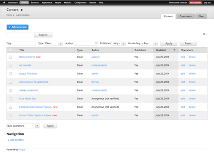

Firm up that Backend
Easy Exercises for a Usable Admin Interface
Lauren Byrwa | @labbydev
Senior Front End Developer @Palantir.net
What do you do with Drupal?
- Front-end?
- Site Building?
- Module Development?
- Content Administrators?
- Have you ever entered content into Drupal?
Why does it matter?
- Developers don't know what it's like to not be developers.
- Content administrators don't always know Drupal.
- The backend gets left behind.
- Content administrators don't have the confidence to do their job without assistance.
Warm ups
- Use the Administration Menu (instead of the default Toolbar).
- Add help text
- Does your structure and naming make sense to people who don't know Drupal?

Dropdowns allow users to easily and quickly get through the system
Adding help text on fields, and descriptions on content types, taxonomies and contexts
Company Workflow
- Intake with the client to discuss their internal needs
- Create a custom workflow for those clients needs
- Determine number and needs of roles
- Craft permissions based on client needs and custom workflow
Permissions
- Content administrators can focus on only the tasks that they need to complete.
- Prevent content maintainers from unintentionally breaking the website.
- Prevent unauthorized users from seeing parts of the site that they shouldn't.
Permissions by Role
Tools to work out your permissions
- Taxonomies: Vocabulary Permissions per Role
- Menus: Menu Admin per Admin
- Fields: Field Permissions
- Content Types: Content Access
An easy exercise for role testing is to use Masquarade.
Permissions Before
Too many options to distract Content administrators
Permissions After
Content administrators can focus on their tasks
Admin Views with VBO
Administration Views
- Customizable view
- Overrides the content, user and taxonomy system pages
Views Bulk Operations (VBO)
- Adds functionality to these views
- Is useful when dealing with a lot of content
Node/Entity Ordering
Nodequeue
Adds easy drag-and-drop interface
Weight
- Relatively lightweight module
- Works like the weights already built into menu items
Nodequeue
- Supports translated nodes
- Allows seperate permissions for editing and ordering
Weight
- lightweight (only two additional database tables)
- Uses core node edit page
Content Interface
Exercise 1: Organize the Edit Page
- Clean up the node edit page
- Divid fields into manageable chunks
Default node edit page

Node edit page after being field grouped
Conditional Fields
Show and hides fields based on the values of other fields
- Keeps edit page from becoming cumbersome
- Great if you only need certain content in some instances
- Helps keep the whole website unbreakable
When content isn't featured, no "Featured Image" upload appears
When content is featured, "Featured Image" upload appears
Exercise 2: Taming Images
- Insert images into the WYSIWYG.
- Create specific style options
- Add additional CSS styles if required
- Use alt and title text to encourage administrators to keep their content accessible.
Manual Crop
- Administrators can crop images in the Drupal after uploading
- Maintains aspect ratio
- Links into image styles
Manual crop
Exercise 3: Trim down the options
Override Node Options
Hides default options like "Promote to front page"
Exercise 4: User friendly select lists
Chosen
- Turn select lists into auto complete tagging fields
- Particularly useful on selects with over LOTS of options
Chosen
Exercise 5: Character Counts
Maxlength
- Limits the ability to be too wordy
- Avoids text breaking the design
- Helpful countdown for administrative users
Maxlength
Exercise 6: Updating and Reverting Content
Workbench Moderation
Helps clients revert content to former versions
Workbench Moderation
Diff
Illustrates what changes were made to the content.
Diff
Configuring the WYSIWYG
- Get rid of unused buttons
- Use the CKEditor module
The only options left here are bold, italicize, format, lists, links and images.
Linkit
- Helps content editors link to internal content
- Allows users to easily search for content on the system or link to a URL
Pushing it to the next level
Custom Dashboard
Login Destination
Redirects users on login
Workbench
The Workbench suite is modular, allowing site builders to build the workflow that best suits the content administrators on their site.
The only options left here are bold, italicize, format, lists, links and images.
Cool Down
Admin Themes
- Admin themes add a final polish to the administrative interface
- Shiny
- Adminimal (with Adminimal Admin Menu)
- Ember
Shiny
Shiny is very consistent with Seven, but with a larger font and more polished look and feel.
Adminimal
Adminimal uses flat UI, color coding, and responsive breakpoints. But, fieldsets are not the best.
Ember
Adminimal uses flat UI, navbar, and responsive breakpoints.
Conclusion
- There are a lot of easy-to-add modules on d.o that can help content administrators streamline their workflow
- Consult a developer for recommendations about what is the best fit for your website and workflow